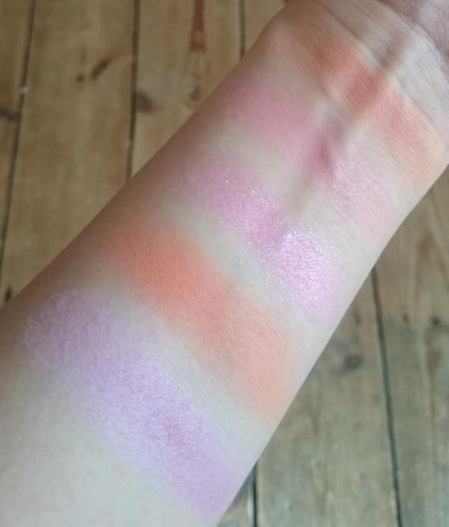
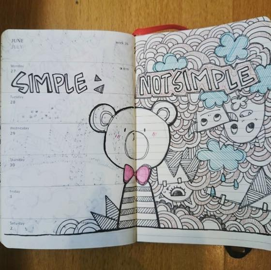

나름 화장을 매우(?) 열심히 한다고 생각하나 아무도 알아보지 못할정도로 옅게 하기때문에(...) 쓰는 속도도 무진장 느리지만;;; 예쁜거 나오면 또 사고싶고 그런게 사람맘 아니겠습니까 :3 그러고보니 곧 홀리데이 & 크리스마스 기프트셋 이 쏟아질 시기가 다가오는군욤;;
스아실 섀도우 & 블러셔 는 저에게 맥시멈이 4-5개 인거 같습니다. 그 이상 늘어나면 사놓고 사용하지 않는다 - 에 대한 죄책감이 있어서;; 자주 손이 안가는건 바로바로 이베이로 직행하고 있습니다;;; 갑자기 생각나서 가져온 블러셔 5개 발색 사진 입니당. 있는힘껏 박박 문질렀어요 ㅋㅋ

현재 살아남은(?) 블러셔 5개 ㅋㅋㅋ
왼쪽 아래에서 부터 위로
맥 풀오브조이 / 아멜리 플라스틱 자몽 / RMK EX-03 / 크리니크 멜론팝 / 타르트 팔레트에 있는 블러셔 입니다.
주로 플라스틱 자몽 / EX-03 / 멜론팝을 바르고 풀오브조이를 위에 티도 안날만큼(....) 덧발라 줍니다.
플라스틱 자몽 블러셔로 훈늉해요//

개인적으로 선호하는 스타일은 생활감 1도 안느껴지는 아무것도 없는 집인데 (아기자기 소품 / 액자 / 벽걸이 장식 다 노땡큐 인 썰렁한 인테리어를 좋아합니다 ^^;;;) 우선 오피스 / 홈오피스 책상은 그게 절대 불가능하고(...) 그런 생활이 가능할려면 우선 뭘 사질 말아야 하는데 그게참 어렵군요 ㅋㅋㅋ
심플라이프 어렵습니당 :p